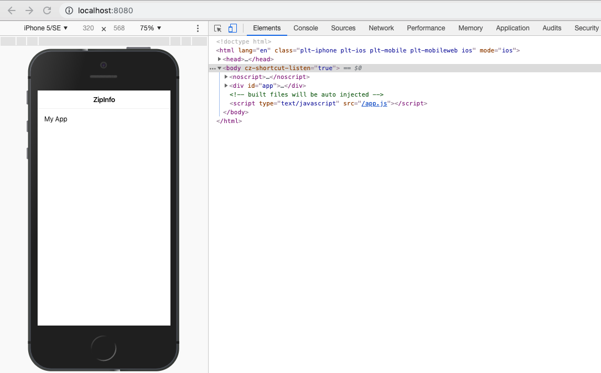
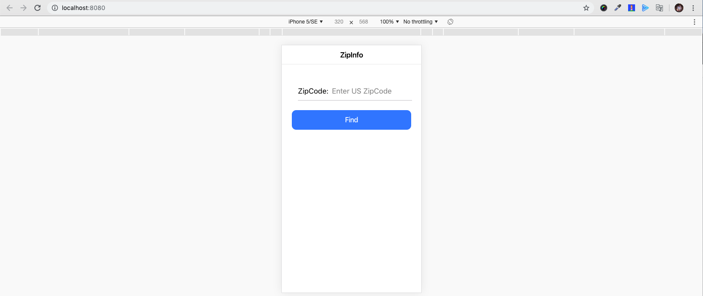
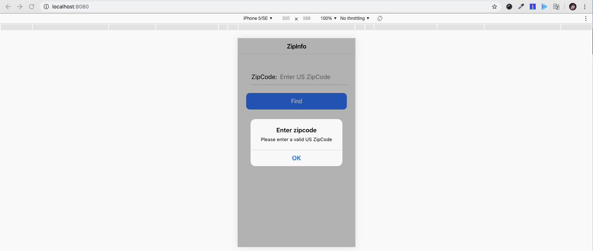
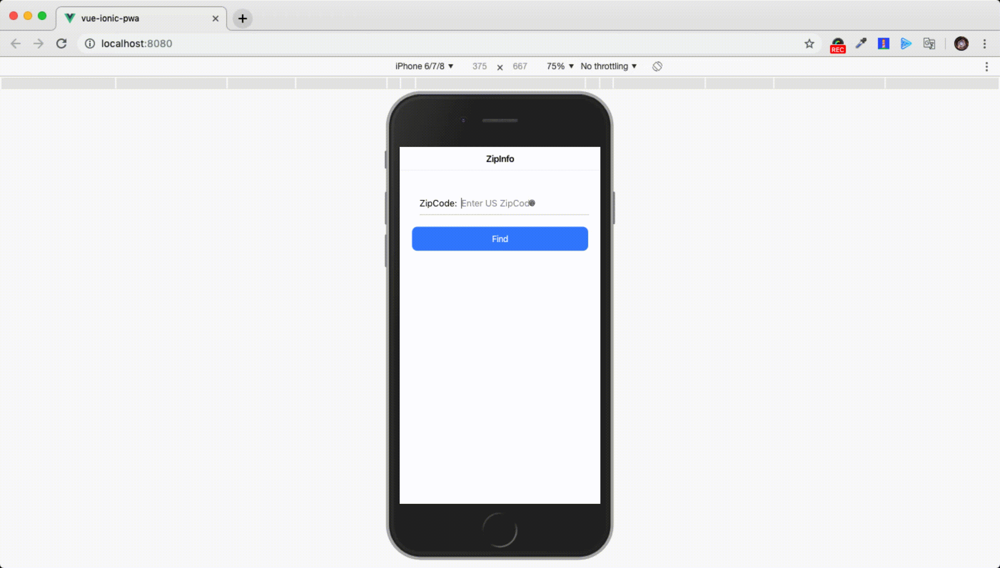
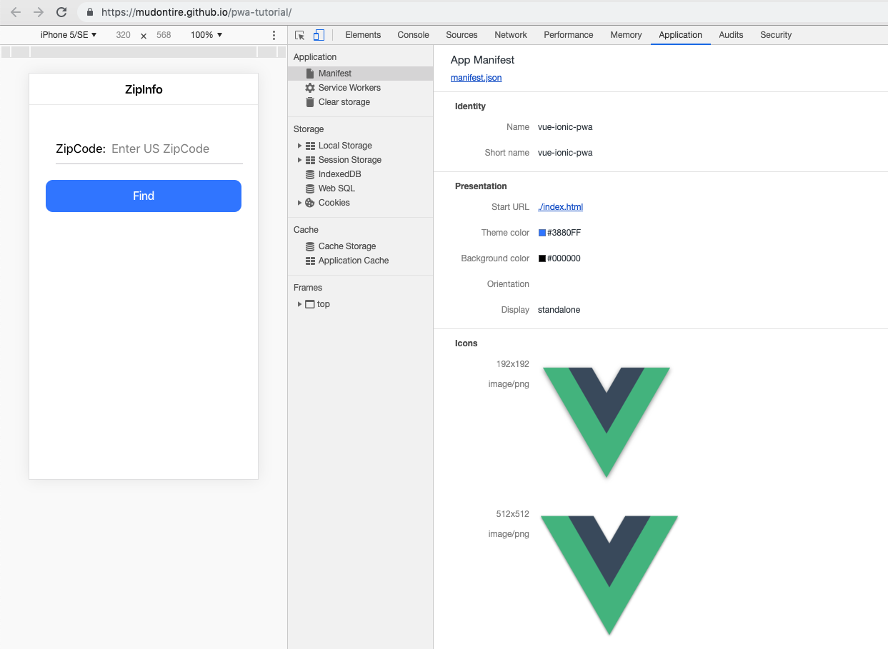
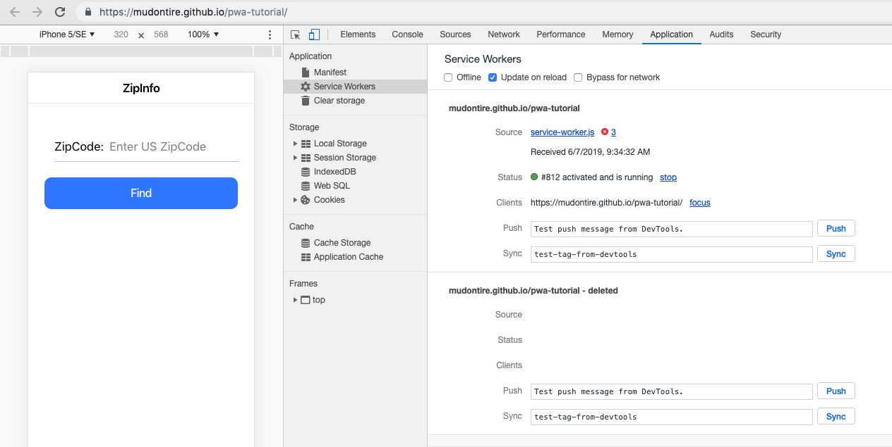
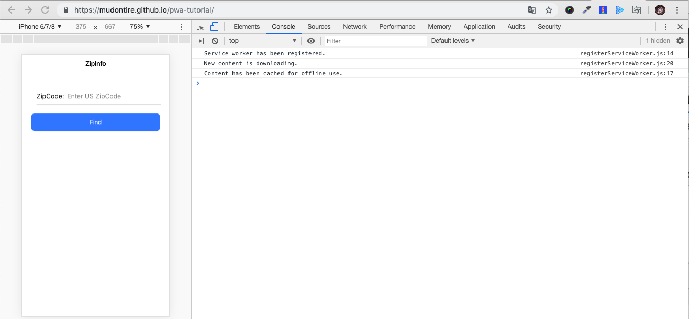
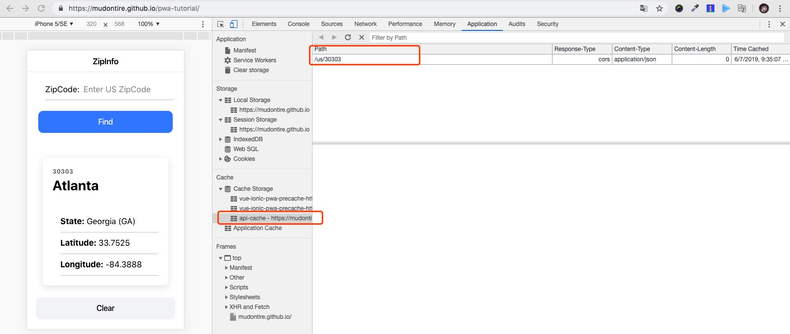
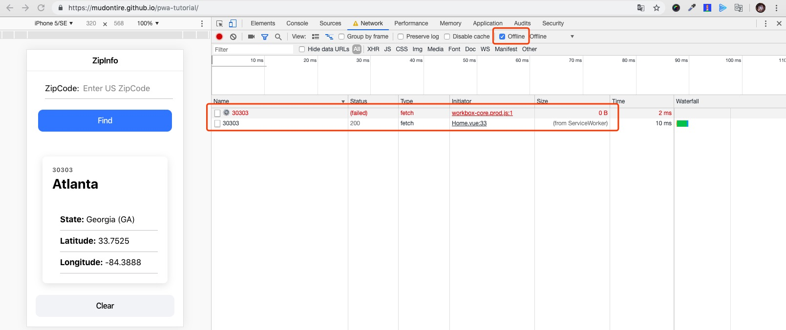

原文连接:https://www.cnblogs.com/fundebug/p/pwa-tutorial.html
摘要： PWA图文教程
- 原文：PWA入门：手把手教你制作一个PWA应用
- 作者：MudOnTire
Fundebug经授权转载，版权归原作者所有。

简介
Web前端的同学是否想过学习app开发，以弥补自己移动端能力的不足？但在面对一众的选择时很多同学略感迷茫，是学习ios还是android开发？是学习原生开发、混合开发（比如：Ionic)，还是使用react native或者flutter这样的跨平台框架？而app开发的学习周期长、学习成本高也让一部分人望而却步。得益于前端技术的飞速发展、浏览器性能的不断提高，使用网页技术开发出接近原生体验的应用得以变为现实，PWA就在这样的背景下应运而生。可以用自己熟悉的HTML、CSS、Javascript开发出媲美原生app的网站，不仅拥有接近原生app的流畅程度，并且具备一些原生app才有的特性，比如：a. 可以在主屏上安装应用图标，b. 离线状态下访问，c. 获取消息通知，等等。。PWA的出现让大家看到了希望！
对比原生应用
那PWA和原生应用相比到底有何竞争力呢？我们分别看一下原生应用和PWA的特点：
原生应用：
- 使用原生SDK和开发工具开发
- 需要考虑跨平台，不同系统往往需要独立开发
- 需要发布到应用商店才能下载使用
- 可以安装到手机主屏，生成应用图标
- 直接运行于操作系统上，访问系统资源方便
- 可以离线使用
- 可以获取消息通知
PWA应用：
- 使用HTML，CSS，JS开发
- 无需考虑跨平台，只需要考虑浏览器兼容性
- 通过url访问，无需发布到应用商店
- 可以安装到手机主屏，生成应用图标
- 运行于浏览器中，可访问系统资源
- 可以离线使用
- 可以获取消息通知
可以发现PWA具备了原生应用的主要能力，但是开发流程却比原生应用更加简洁：a. html/css/js的群众基础更好，开发效率更高；b. 省去了为不同系统开发独立版本的大量成本；c. 省去了上架到应用市场的繁琐流程；d. 无需前往应用商店下载，用户使用起来也更加方便。但是值得注意的是，PWA还是相对比较新的技术，实现规范还有很多调整的空间，部分浏览器对PWA的支持也还不完善，但是PWA是一个趋势，所以现在学习正合适！
本文将通过一个简单的列子（一个简单的邮编查询app）向大家展示PWA的开发流程，项目参考：Traversy Media - Build a PWA With Vue & Ionic4。完成后的效果是 这样的 。
创建项目
项目使用Vue + Ionic的组合进行开发。本文主要关注PWA的搭建，因此vue、ionic等技术不做过多描述。使用VSCode的同学，建议安装Vetur插件增加开发效率。
1. 首先全局安装 @vue/cli：
npm install -g @vue/cli2. 初始化vue项目：
vue create vue-ionic-pwa3. 因为ionic的路由依赖于vue-router，所以接下来安装 vue-router：
vue add router4. 安装 @ionic/vue
npm install @ionic/vue5. 在 src/main.js 中添加对ionic的引用：
import Ionic from '@ionic/vue'
import '@ionic/core/css/ionic.bundle.css'
Vue.use(Ionic)6. 在 src/router.js 中使用 IonicVueRouter 替换默认的vue router：
import Vue from 'vue'
import { IonicVueRouter } from '@ionic/vue';
import Home from './views/Home.vue'
Vue.use(IonicVueRouter)
export default new IonicVueRouter({
mode: 'history',
base: process.env.BASE_URL,
routes: [
{
path: '/',
name: 'home',
component: Home
}
]
})7. 将 src/App.vue 内容修改为：
<template>
<div id="app">
<ion-app>
<ion-vue-router/>
</ion-app>
</div>
</template>8. 将 src/views/Home.vue 内容修改为：
<template>
<div class="ion-page">
<ion-header>
<ion-toolbar>
<ion-title>
ZipInfo
</ion-title>
</ion-toolbar>
</ion-header>
<ion-content class="ion-padding">My App</ion-content>
</div>
</template>
<script>
export default {
name: 'home',
components: {}
}
</script>最后，我们运行yarn serve看下效果：

App功能实现
App主要有三部分组成：1. 搜索组件，用于输入邮编并查询，2. 展示组件，用于展示查询到的邮编信息，3. 清除按钮，用于清除查询到的邮编信息
1. 搜索组件
我们在 src/components 下面新建 ZipSearch.vue 文件作为邮编搜索组件，主要逻辑为当用户输入一串字符，按下搜索按钮，如果输入合法则触发get-zip事件，如果不合法则给出提示。
ZipSearch.vue
<template>
<ion-grid>
<form @submit="onSubmit">
<ion-col>
<ion-item>
<ion-label>ZipCode:</ion-label>
<ion-input
:value="zip"
@input="zip = $event.target.value"
name="zip"
placeholder="Enter US ZipCode"
/>
</ion-item>
</ion-col>
<ion-col>
<ion-button type="submit" color="primary" expand="block">Find</ion-button>
</ion-col>
</form>
</ion-grid>
</template>
<script>
export default {
name: "ZipSearch",
data() {
return {
zip: ""
};
},
methods: {
onSubmit(e) {
e.preventDefault();
const zipRegex = /(^\d{5}$)|(^\d{5}-\d{4}$)/;
const isValid = zipRegex.test(this.zip);
if (!isValid) {
this.showAlert();
} else {
this.$emit("get-zip", this.zip);
}
this.zip = "";
},
showAlert() {
return this.$ionic.alertController
.create({
header: "Enter zipcode",
message: "Please enter a valid US ZipCode",
buttons: ["OK"]
})
.then(a => a.present());
}
}
};
</script>在 src/views/Home.vue 中引入 ZipSearch 组件，当Home接收到get-zip事件时调用 https://www.zippopotam.us 的接口，获取邮编对应的信息：
...
<ion-content class="ion-padding">
<ZipSearch v-on:get-zip="getZipInfo"/>
</ion-content>
...
<script>
import ZipSearch from "../components/ZipSearch";
export default {
name: "home",
components: {
ZipSearch
},
data() {
return {
info: null
};
},
methods: {
async getZipInfo(zip) {
const res = await fetch(`https://api.zippopotam.us/us/${zip}`);
if (res.status == 404) {
this.showAlert();
}
this.info = await res.json();
},
showAlert() {
return this.$ionic.alertController
.create({
header: "Not Valid",
message: "Please enter a valid US ZipCode",
buttons: ["OK"]
})
.then(a => a.present());
}
}
};
</script>我们先看一下搜索组件的效果：

输入邮编格式错误：

2. 信息展示和清除组件
获取到邮编信息后我们需要一个展示邮编信息的组件和一个清除信息的按钮，在 src/components 下面新建 ZipInfo.vue和ClearInfo.vue 。
ZipInfo.vue
<template>
<ion-card v-if="info">
<ion-card-header>
<ion-card-subtitle>{{info['post code']}}</ion-card-subtitle>
<ion-card-title>{{info['places'][0]['place name']}}</ion-card-title>
</ion-card-header>
<ion-card-content>
<ion-list>
<ion-item>
<ion-label>
<strong>State:</strong>
{{info['places'][0]['state']}} ({{info['places'][0]['state abbreviation']}})
</ion-label>
</ion-item>
<ion-item>
<ion-label>
<strong>Latitude:</strong>
{{info['places'][0]['latitude']}}
</ion-label>
</ion-item>
<ion-item>
<ion-label>
<strong>Longitude:</strong>
{{info['places'][0]['longitude']}}
</ion-label>
</ion-item>
</ion-list>
</ion-card-content>
</ion-card>
</template>
<script>
export default {
name: "ZipInfo",
props: ["info"]
};
</script>ClearInfo.vue
<template>
<ion-button color="light" expand="block" v-if="info" @click="$emit('clear-info')">Clear</ion-button>
</template>
<script>
export default {
name: "ClearInfo",
props: ["info"]
};
</script>接着在Home中引入ZipInfo和ClearInfo组件：
src/views/Home.vue
...
<ion-content class="ion-padding">
<ZipSearch v-on:get-zip="getZipInfo"/>
<ZipInfo v-bind:info="info"/>
<ClearInfo v-bind:info="info" v-on:clear-info="clearInfo"/>
</ion-content>
...
import ZipInfo from "../components/ZipInfo";
import ClearInfo from "../components/ClearInfo";
export default {
name: "home",
components: {
ZipSearch, ZipInfo
},
methods:{
...
clearInfo(){
this.info = null;
}
}
}到此，app的主体就完成了，效果如下：

实现PWA
我们使用现成的 @vue/pwa 插件来给我们的app增加PWA的能力。
安装 @vue/pwa：
vue add @vue/pwa安装完成后项目中增加了 public/manifest.json 和 registerServiceWorker.js两个文件。其中 public/manifest.json 文件内容如下：
{
"name": "vue-ionic-pwa",
"short_name": "vue-ionic-pwa",
"icons": [
{
"src": "./img/icons/android-chrome-192x192.png",
"sizes": "192x192",
"type": "image/png"
},
{
"src": "./img/icons/android-chrome-512x512.png",
"sizes": "512x512",
"type": "image/png"
}
],
"start_url": "./index.html",
"display": "standalone",
"background_color": "#000000",
"theme_color": "#4DBA87"
}manifest.json中主要包含app的基本信息，比如名称（name）、图标（icons）、显示方式（display）等等，是web app能被以类似原生的方式安装、展示的必要配置。更多的配置项可参考 MDN Web App Manifest。
在Chrome浏览器控制台中也可看到app的manifest配置：

registerServiceWorker.js用于注册service worker。service worker通俗来讲就是在浏览器后台独立于网页运行的一段脚本，service worker可以完成一些特殊的功能，比如：消息推送、后台同步、拦截和处理网络请求、管理网络缓存等。Service worker之于pwa的意义在于能够为用户提供离线体验，即掉线状态下用户依旧能够访问网站并获取已被缓存的数据。使用service worker需要HTTPS，并且考虑 浏览器兼容性。
registerServiceWorker.js
import { register } from 'register-service-worker'
if (process.env.NODE_ENV === 'production') {
register(`${process.env.BASE_URL}service-worker.js`, {
ready () {
console.log(
'App is being served from cache by a service worker.\n' +
'For more details, visit https://goo.gl/AFskqB'
)
},
registered () {
console.log('Service worker has been registered.')
},
cached () {
console.log('Content has been cached for offline use.')
},
updatefound () {
console.log('New content is downloading.')
},
updated () {
console.log('New content is available; please refresh.')
},
offline () {
console.log('No internet connection found. App is running in offline mode.')
},
error (error) {
console.error('Error during service worker registration:', error)
}
})
}在Chrome浏览器控制台中也可看到service worker的状态：

当然，只注册service worker还不够，我们还希望控制service worker的行为，通过在 vue.config.js 中增加相关的配置我们可以设置service worker文件的名称、缓存逻辑等等。
vue.config.js
module.exports = {
pwa: {
workboxPluginMode: 'GenerateSW',
workboxOptions: {
navigateFallback: '/index.html',
runtimeCaching: [
{
urlPattern: new RegExp('^https://api.zippopotam.us/us/'),
handler: 'networkFirst',
options: {
networkTimeoutSeconds: 20,
cacheName: 'api-cache',
cacheableResponse: {
statuses: [0, 200]
}
}
}
]
}
}
}更多配置请参考：@vue/cli-plugin-pwa 和 workbox-webpack-plugin。由于@vue/cli-plugin-pwa生成的service worker只在生产环境生效，所以建议将项目build之后部署到生产环境测试。本文示例使用 github pages进行部署和展示。
到此，将普通web app转成PWA的工作基本完成，我们部署到线上看下效果：
文件已被缓存用于离线访问：

查询一个邮编试试，可以发现请求被缓存了下来：

我们接着关掉网络，再查询刚刚的那个邮编，发现在网络请求失败之后立即切换用本地缓存的数据：

好了，一个简单的PWA就已经制作完成了。当然PWA的功能远不止本文所展示的，比如推送、安装到手机，后续有机会再跟大家分享，谢谢🙏。
最后，推荐大家使用Fundebug，一款很好用的BUG监控工具~
本文demo地址：https://github.com/MudOnTire/pwa-tutorial
关于Fundebug
Fundebug专注于JavaScript、微信小程序、微信小游戏、支付宝小程序、React Native、Node.js和Java线上应用实时BUG监控。 自从2016年双十一正式上线，Fundebug累计处理了20亿+错误事件，付费客户有阳光保险、核桃编程、荔枝FM、掌门1对1、微脉、青团社等众多品牌企业。欢迎大家免费试用！